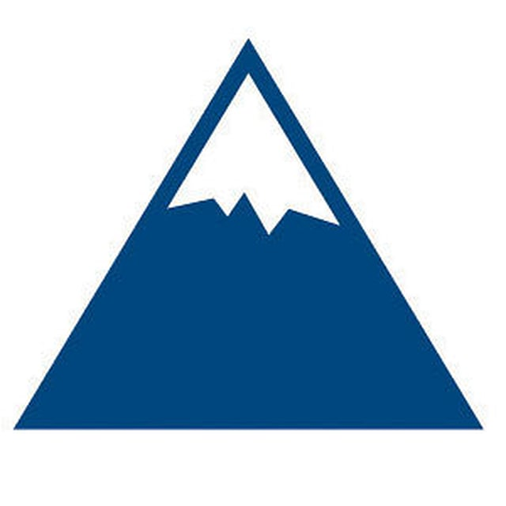
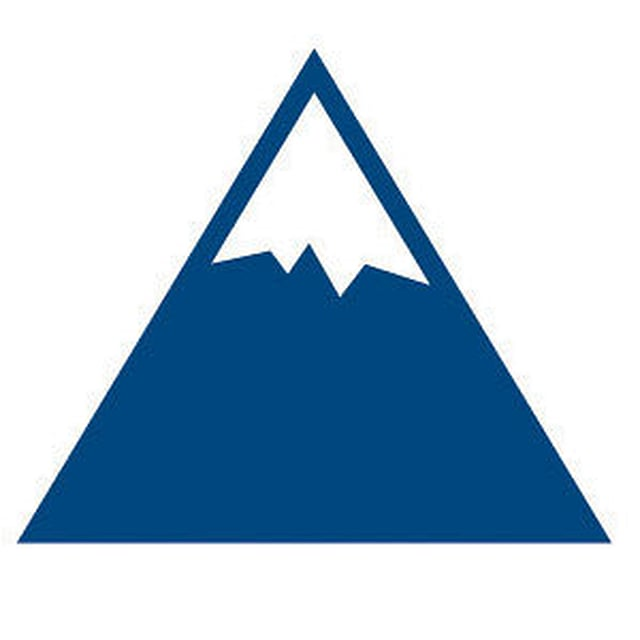

You Say Hobbies, I Say Passions!
 One of my passions is play field hockey. I've played since I was 10 years old and it has always been a stress reliever for me as well as a way to meet new people and have fun! I am currently involved with both the more competitive club field hockey team and the less competitive intramural system for field hockey at UMaine. Above is a picture of my high school team on "tie-dye" day. Secondly, I love to ski! I grew up skiing at Saddleback and eventually began making trips to Sugarloaf each winter. Now I plan to buy a student discounted season pass. It was always something I could do with my family or some friends to get away and get some fresh air and good excercise. I remember when my dad taught me how to ski. He used to put a rope around my waist and he would ski behind me to keep me from flying down the mountain. Crazy how far I've come as a skiier since then. Lastly, I'll talk about how much I love being social and hanging out with my amazing friends! I love that UMaine has such a diverse offering of personalities and interests. It has given me so many new relationships with people I never would have had the chance to meet and for that, I am incredibly thankful.

Jazy's Homepage
One of my passions is play field hockey. I've played since I was 10 years old and it has always been a stress reliever for me as well as a way to meet new people and have fun! I am currently involved with both the more competitive club field hockey team and the less competitive intramural system for field hockey at UMaine. Above is a picture of my high school team on "tie-dye" day. Secondly, I love to ski! I grew up skiing at Saddleback and eventually began making trips to Sugarloaf each winter. Now I plan to buy a student discounted season pass. It was always something I could do with my family or some friends to get away and get some fresh air and good excercise. I remember when my dad taught me how to ski. He used to put a rope around my waist and he would ski behind me to keep me from flying down the mountain. Crazy how far I've come as a skiier since then. Lastly, I'll talk about how much I love being social and hanging out with my amazing friends! I love that UMaine has such a diverse offering of personalities and interests. It has given me so many new relationships with people I never would have had the chance to meet and for that, I am incredibly thankful.

Jazy's Homepage